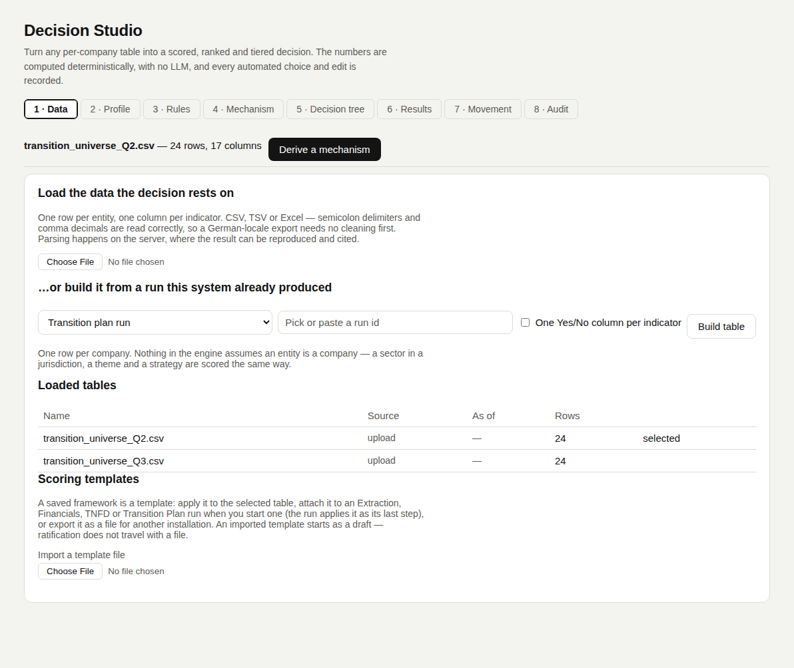

Data
The engine computesGets the table the decision rests on: one row per entity, one column per indicator. Every other tab stays locked until a table is selected.
Three ways in
Pick one. All three end in the same kind of saved table.
| Route | What it does | When to use it |
|---|---|---|
| Upload a file | CSV, TSV, TXT, XLSX or XLS. Parsed on the server. | A table from outside the system: a vendor export, a spreadsheet. |
| Build from a run | Turns one of this system's runs into a table through a source adapter (below). | Scoring what the pipeline already produced. |
| Apply a template | Loads a saved framework onto the selected table. The list shows each framework's fit: fits, or missing and the first missing columns. Opens Results. | Repeating last quarter's decision on this quarter's data. |
Source adapters
Each adapter names what one row is. Three of them are not companies: the engine scores rows.
| Source | One row per | Columns it produces |
|---|---|---|
| Transition plan run | company | Disclosed count, walk/talk split, per-category disclosure %, confidence. Optional: one Yes/No column per indicator (Ind_<id>_Disclosed). |
| Extraction run | company | One column per schema field, each cell's confidence carried; zero where the citation did not ground. |
| Financials run | company | CapEx and R&D totals, segment count, summed segment revenue, as reported (no currency conversion). |
| TNFD run | company | One Yes/No per TNFD recommendation, count disclosed, grounded core metrics per category. |
| Joined runs | company | Two or more of the four above, matched on Company_Id or name. Shared columns get a prefix: TP_, Extraction_, Financials_, TNFD_. |
| Thematic universe run | company | Activities included, best and mean exposure, adjudicator confidence. |
| Portfolio snapshot + climate | company | Holdings on one date joined to climate data points. market_value_eur becomes the size column. |
| Transition barrier matrix | sector × region | Per-pillar feasibility, confidence, staleness. Reference data; needs no run. Filter by region. |
| Emerging themes run | theme | Velocity, breadth, persistence, novelty, action score, materiality, grounded-source share, status. |
| Strategy replication runs | strategy | In/out-of-sample Sharpe and return, persistence, max drawdown, deflated Sharpe, verdict. |
Parsing logic
Runs on every upload, so a file reads the same way every time.
| Rule | What it does | Why |
|---|---|---|
| Delimiter | Picks the delimiter that gives the most consistent column count, not the most frequent character. | A free-text column full of commas would otherwise beat the semicolons that separate fields. |
| Number format | Detected per column from its values. 1.234,5 reads as 1234.5. | Read wrongly, it becomes 1.234: plausible and wrong, with no error. |
| Yes/No values | yes, ja, wahr, x, 1 and their negatives are read as booleans. | Bilingual exports need no cleaning. |
| Confidence | Carried per cell when the source has it (every extraction-based table does). | Grounded coverage on the Mechanism tab needs it. |
In the tool
Screenshots of Decision Studio running on the sample table, taken with the app as it is on main.


Functions applied
What runs at this step, in order, with an example. Blue rows run on GoRules ZEN; the rest is Python in backend/arp/decision/.
| Function | Engine | Example |
|---|---|---|
sniff_delimiter | Python | Company;Scope 1 (t);Note / A;1.234,5;x, y → ';'. The comma inside the note does not win. |
detect_decimal_comma | Python | ['1.234,5', '980,0', '12,75'] → True, so the column reads 1234.5. |
parse_delimited | Python | Company;Scope 1 (t) / A;1.234,5 → [['Company', 'Scope 1 (t)'], ['A', '1.234,5']] |
sources.from_<source> | Python | One adapter per source (transition plan, extraction, TNFD, joined runs, …) builds the same kind of table. |
Code and formulas
The formula each function applies, and its source as it is in the repository.
sniff_delimiterbackend/arp/decision/parsing.py:32–49For each candidate delimiter d over the first 20 lines: score(d) = 10 × share of lines with line 1's column count + columns in line 1. Highest score wins; a candidate must give at least 2 columns.
Python source (18 lines)
def sniff_delimiter(text: str) -> str:
"""Picks the delimiter that yields the most consistent column count
across the first few lines, rather than simply the most frequent
character -- a free-text column full of commas otherwise wins over the
semicolons actually separating the fields."""
lines = [ln for ln in text.splitlines()[:20] if ln.strip()]
if not lines:
return ","
best, best_score = ",", -1.0
for delim in _DELIMITERS:
counts = [len(next(csv.reader([ln], delimiter=delim))) for ln in lines]
if max(counts) < 2:
continue
consistent = sum(1 for c in counts if c == counts[0]) / len(counts)
score = consistent * 10 + counts[0]
if score > best_score:
best, best_score = delim, score
return bestdetect_decimal_commabackend/arp/decision/parsing.py:98–101comma-decimal values > dot-decimal values → the column is read with comma decimals.
Python source (4 lines)
def detect_decimal_comma(values: list[str]) -> bool:
comma = sum(1 for v in values if _DECIMAL_COMMA_RE.match(v.strip()) and "," in v)
dot = sum(1 for v in values if _DECIMAL_DOT_RE.match(v.strip()) and "." in v)
return comma > dot